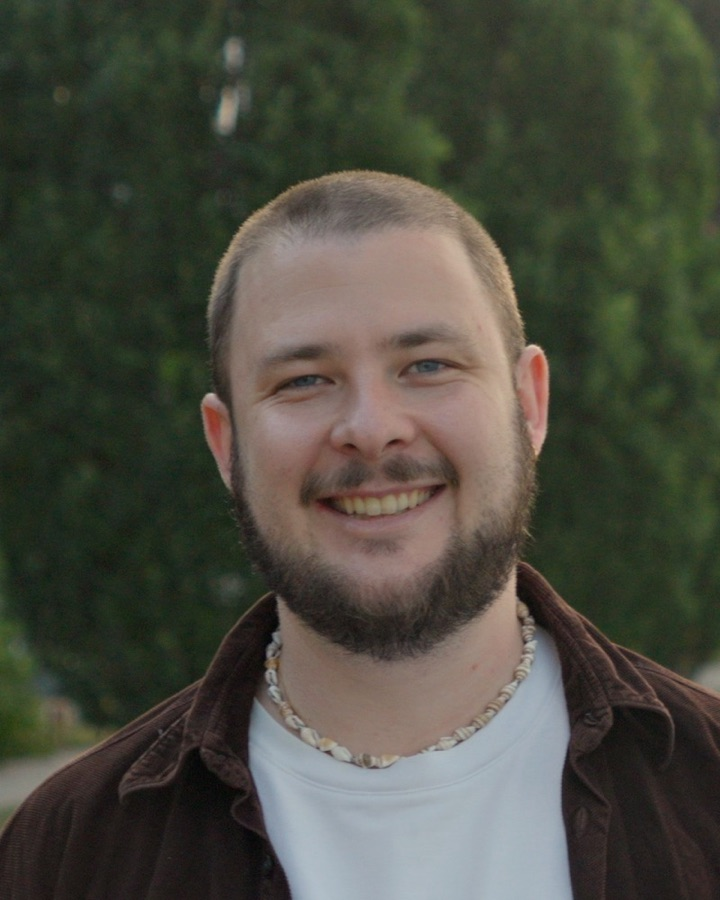
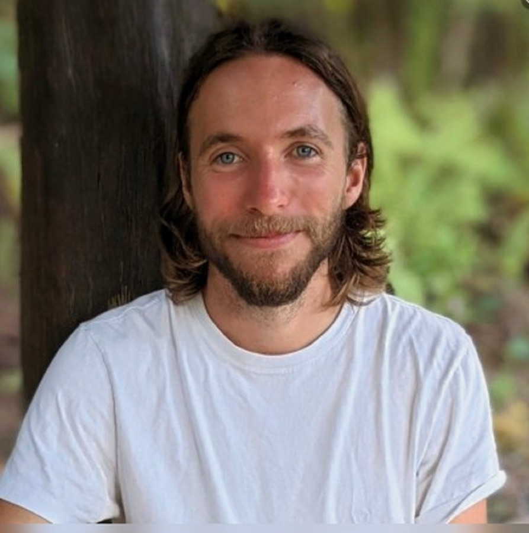
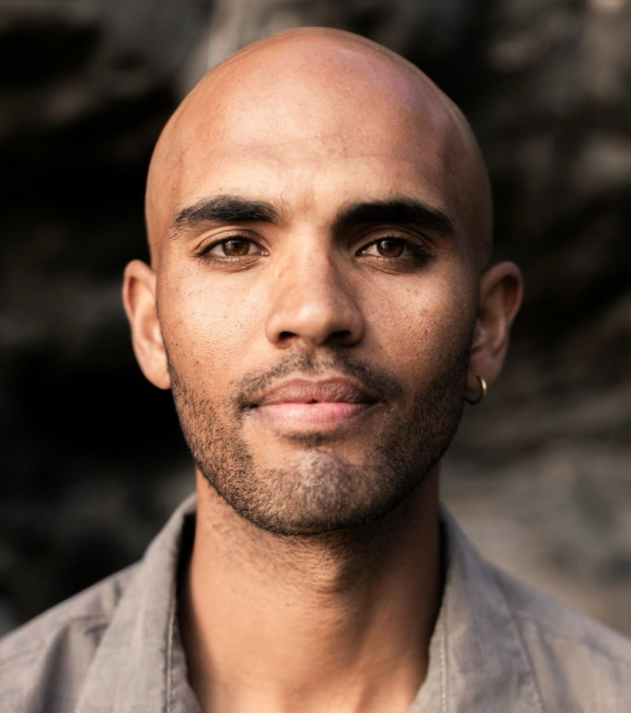

Our team.
-

Max Roth
Researching human alignment and scaling trust: how collective intelligence, embodied ethics, and playful collaboration can support coordination on hard problems. Background in physics, trauma-informed facilitation and organisational development.
-

Ryan Lowe
Researcher at the Meaning Alignment Institute. Previously at OpenAI, where he led the practical alignment team behind InstructGPT and co-led the alignment of GPT-4.
-

Jaden Ramsey
Research practitioner working with the ecology of the body: regulation, performance, and restoration. He tends the conditions that let the body's inherent intelligence re-emerge.